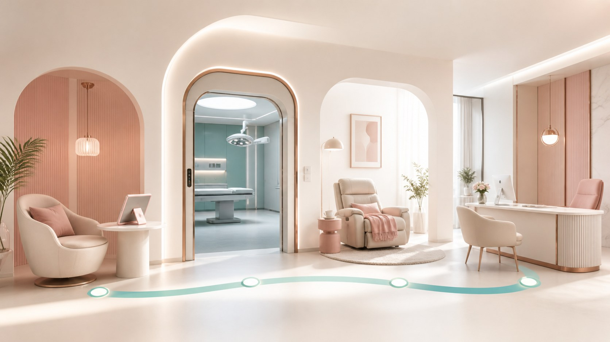

胸部整形 · 隆胸
隆胸流程与恢复｜从面诊到术后随访，一步心里有数
隆胸不是「躺进去就能走」的事。这篇按术前、手术、恢复、随访讲清楚整个过程，也把感染、包膜挛缩、不对称、假体问题这些可能遇到的并发症提前告诉你，让你知道恢复是个体差异很大的事。

隆胸是一个完整的过程，可以分成术前、术中、术后三阶段。把它当作一次需要认真准备和配合的医疗计划来看，心理和身体都会更从容。
术前是基础。面诊时，医生会了解你的期望和身体情况，做必要的检查，比如影像、血常规、凝血功能等，并评估你是否适合手术、选什么假体或方式。你自己要做的是：如实告知病史、用药和过敏；术前一段时间戒烟戒酒，因为烟酒会影响血供和愈合；某些影响凝血或可能增加风险的药物，如阿司匹林这类，要按医嘱提前调整或停用。
手术当天在麻醉下进行。医生通过切口（多在乳晕、腋下或乳房下缘）把假体置入合适的层次，或注射自体脂肪。手术时长通常不长，但更关键的是麻醉和术中监护要由有资质的人员完成。体位、切口、放置层次的选择，都会影响后续的外形和恢复。
术后恢复是最考验耐心的阶段。刚做完会戴支撑或塑形包扎，有的会留置引流，帮助固定和排出渗液。接下来是数周内逐渐消肿、软化和定型；早期要避免剧烈运动，以及大幅抬手、提重物，按医生要求穿戴支撑衣物、按时复诊。恢复期间乳房的触感变化、麻木或敏感，大多会慢慢回来。整个恢复期从几周到几个月不等，个体差异非常大，有人快有人慢，不用跟别人比，按自己的节奏配合医生。
风险与并发症也要心里有数。任何手术都有感染、出血、疤痕的可能；假体相关的包括包膜挛缩（假体周围形成增厚的纤维包膜，让乳房变硬、变形）、假体破裂或移位、左右不对称；自体脂肪的可能有脂肪坏死、钙化或结节。这些不一定会发生，但确实存在，且部分可能需要二次处理。所以选择做，是在清楚这些的前提下做的。
恢复个体差异大，值得多讲一句：同样做隆胸，有人恢复很快，有人恢复期很长。影响因素很多，包括你的身体条件、手术方式、术后配合、以及有无其他情况。别拿别人当标准，也别因为自己恢复慢就慌，把异常情况，比如明显红肿热痛、发热、突然变形，及时告诉医生，比什么都重要。
本文用于公众健康教育，不构成医疗建议，不替代面诊。医美决策请与具备资质的医师面诊后作出。